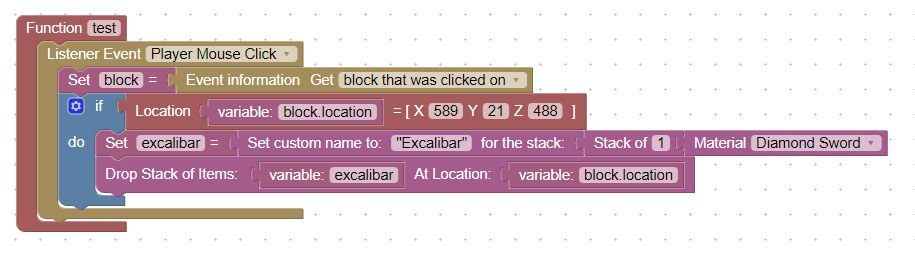

Custom Button Drop
Overview
When a player clicks on a block (like a button), you can get the location of the block that was clicked on.
Based on the location you can perform actions such as dropping a special item
Here is some example code that will drop an item on a button click
